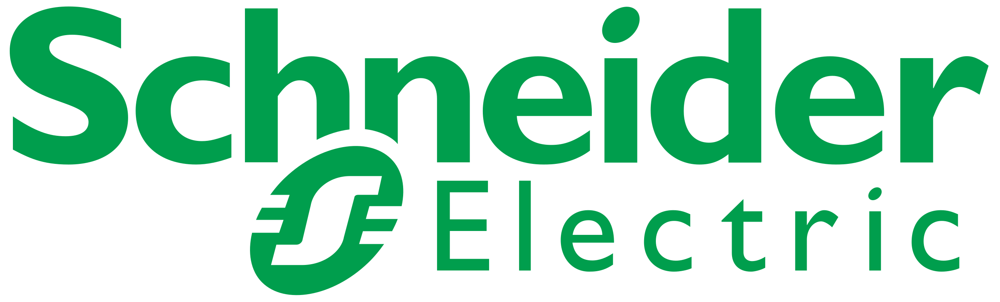
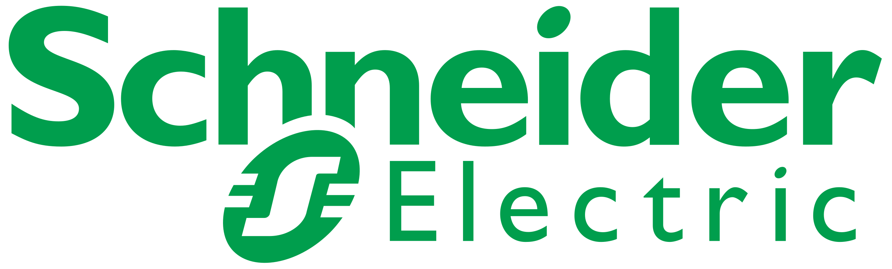

Dzień 1 (22.05)
16:00 – 16:10
Otwarcie spotkania
16:10 – 16:15
Przywitanie Gości seminarium teoretycznego
Prezentacja zagadnień teoretycznych
16:15-16:35
Panel T1: Cyberbezpieczeństwo w przestrzeni publicznej
16:35 -16:55
Panel T2: Cyberbezpieczeństwo w programowaniu
16:55 -17:00
Przerwa
17:00 -17:20
Panel T3: AI w zastosowaniach przemysłowych
17:20 – 17:40
Panel T4: Zastosowanie sztucznej inteligencji do wykrywania zagrożeń w cyberbezpieczeństwie w systemach IPS i IDS firewalla
17:40 – 18:00
Panel T5: Agenci AI w działaniach przestrzeni publicznej
18:00 – 18:20
Panel T6: Zagrożenia stosowania sztucznej inteligencji
18:20 – 18:40
Rozmowy szkoleniowe
18:40
Zakończenie części 1: seminarium teoretyczne
Dzień 2 (23.05)
09:00 – 09:05
Otwarcie spotkania technicznego – cz. 2
09:05 – 09:10
Przywitanie Gości seminarium cz. 2
Prezentacja zagadnień technicznych
09:10 – 10:30
Panel A: Schneider Electric
- AI-Ready Data Centers
- AI w automatyce budynku
10:30 – 11:45
Panel B: Integra BMS
11:45 – 12:00
Przerwa
12:00 – 12:40
Panel C: NGE
- PAN STRATA
- Cortex
- Prisma SASE
- PCortex Cloud
- Teoria i nagranie z operacji na interfejsach
12:40 – 13:20
Panel D: Palo Alto Networks
- PAN IoT
- Teoria i pokaz interfejsu
- Pokaz możliwości chmurowego IoT
13:20 – 14:00
Panel E: Consentmanager AB
14:00 – 15:00
Rozmowy techniczne
15:00
Zakończenie seminarium szkoleniowego IT
Organizatorzy
Instytut Informatyki UG
Wydział Matematyki, Fizyki i Informatyki UG
Kontakt: biuromfi@ug.edu.pl
Komitet organizacyjny
dr. hab. Marcin Marciniak, prof. UG
dr. Adam Kostulak
dr. inż. Stanisław Witkowski
Studenci MFI: Bartłomiej Wnuk, Dominik Krakowski, Michał Kopczewski, Dawid Kalinowski, Maria Koren, Maksim Todryk
Lokalizacja
Uniwersytet Gdański
ul. Wita Stwosza 57, sala 1.14/1.15
Parking dostępny na terenie kampusu
Grupa docelowa
- Specjaliści IT i cyberbezpieczeństwa
- Inżynierowie automatyki
- Badacze AI
- Integratorzy systemów
Cele konferencji
- Wymiana doświadczeń w zakresie cyberbezpieczeństwa
- Prezentacja najnowszych rozwiązań AI
- Integracja środowiska IT i automatyki budynkowej
- Budowanie sieci kontaktów w branży